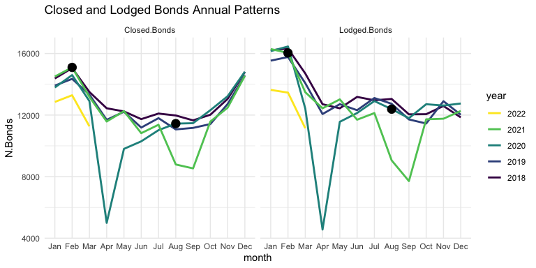

In this post, I illustrate an end-to-end data science project investigating the impact of the February 2021 Residential Tenancies Amendment Bill by observing changing rental trends on the New Zealand housing market.
Data Source
The data is sourced from the NZ Tenancy Services website. Three CSV files are provided with territorial, regional, and quarterly aggregate bond statistics. In order to translate Location Id’s from the quarterly dataset into location names, it is also necessary to retrieve data from the Stats NZ site.
Data Processing
One of the first data processing tasks is to ensure each data column is imported as the correct type, to ensure proper usage later in the analysis.
Some of the “.Bond” and “.Rent” columns of each dataset import as character-type columns, which does not match their numeric contents. I found that removing the thousands-delimiting commas made converting to integer type possible.
1
2
3
4
5
6
7
# remove comma from numeric values and convert columns
library(tidyverse)
q2 <- quarterly %>%
replace_na(list(Location.Id=-1)) %>%
mutate(across(str_subset(names(quarterly),
regex(".Bond|(n|e).Rent|.Id")),
function(x) {as.integer(gsub(',', '', x))}))
The next data processing step is to convert the Time Frame column into more useful year and quarter columns. The lubridate library makes that a simple task.
I also joined the Stats NZ location ID and location name columns with the quarterly report, so that location names could be easily included in future analysis. It was necessary to manually add ID -99 to get the location name "ALL" to join correctly.
1
2
3
4
5
6
7
8
9
10
11
fname <- "statistical-area-2-2019-centroid-true"
fpath <- paste0("../data/statsnz", fname, "-CSV/", fname, ".csv")
# import and join location names
areas <- read.csv(fpath)
locations <- areas %>%
mutate(ID = SA22019_V1_00) %>%
mutate(Location = SA22019_V1_00_NAME) %>%
dplyr::select(ID, Location)
all_locations <- rbind(locations, list(-99, 'ALL'))
q.df <- left_join(q3, all_locations, by=c('Location.Id' = 'ID'))
A similar set of steps were followed to import the regional and territorial datasets as well, which can be seen in the Appendix.
Data Exploration
The first area of the data explored is the active bond numbers before and after the two-phase Bill implementation in August 2020 and February 2021, searching for any patterns that may change around those dates.
There does seem to be some unexpected change through 2021, which suggests some effect, or perhaps some external factor. Let’s check the number of Total and Closed Bonds as well.

It seems that both Closed and Lodged Bonds follow a similar annual pattern, though with some difference toward the beginning and end of the year. The obvious indicators here are the severe dips in April of 2020 and Aug/Sep of 2021, probably related to the level 4 COVID lockdowns which occurred around those times. It is interesting to note the first few months of 2022: both Closed and Lodged bond numbers are down relative to previous years. This could indicate that there is less moving between residences by renters, as opposed to less residences on the market.
Let’s check the disaggregated quarterly dataset to see if any bond patterns differ across dwelling types.
Again, it seems that COVID lockdowns in Q2 2020 and Q3 2021 caused a significant perturbation to bond filings across the board, making any effects from the Bill very difficult to distinguish.
Let’s move to the regional dataset to search for patterns on the regional dimension.
Auckland, Canterbury, Waikato, Wellington, and a few others demonstrate a strong upward trend before the Bill, with a downward trend afterward. Those regions also harbor the largest cities in New Zealand, which begs the question: is this a pattern mostly correlated with urban environments? Could the trend change be an “urban flight” phenomenon caused by COVID-19, rather than changes to rental conditions caused by the Bill?
There may be too many territories to manage in one plot, but it’s worth a try to see if any patterns can be gleaned at the territorial level. In the plot below, I’ve separated the data before and after Phase 1 of the Bill, and smoothed each side with loess regression, to try to focus the illustration on pattern change.
Analytical Plan
Based on the information illuminated in the data exploration, it seems that the effects of the Bill have varied to some small degree across dwelling types and to a great degree across locations. The analytical path forward is not obvious, to me anyway, because of the huge confounding factors and inherent inability of establishing causality in observational data. I decided to fit a series of models to the data before the Bill’s implementation, and compare the predictions with actual data from the time after the Bill. Random Forest makes for a great baseline, so that is attempted first. Naive and Holt-Winters seasonal predictions are also attempted. Perhaps the most informative, due to the ease of extracting a confidence interval of prediction, is a Bayesian structural time-series model. Two more ad-hoc methods of analysis are attempted as well: spline regression of month-over-month changes in data, to address autocorrelation between data points, and changepoint detection. Hopefully, with information gathered from a few different models, the effects of the Bill become more clear.
Results
Below, a Random Forest model trained on all regional monthly data before 2021 (date, year, month and Location variables), predicts the number of Active Bonds in each region.
Prediction is generally not too far from the truth, though it varies greatly by location, and does not capture obvious trajectories, as best illustrated by Tasman and Waikato. Because it is the same model for all locations, it is not able to distinguish the varying seasonality of each location individually. Dunedin’s extreme seasonality may be causing some phantom seasonality in other locations. Overall RF at least gives a fair baseline to compare further predictive models.
To prevent further crossover noise between locations, all further modelling and analysis is conducted on Auckland alone. Auckland is the most populated region in New Zealand, so seems the natural choice.
The next models that may give some insight to the effects of the 2021 Bill are a naive seasonal model and, likely more effective, Double-Seasonal Holt-Winters forecasting. These models are trained on data between the years 2000 and 2020 (or 2021 in the case of DSHW_2), and their predictions plotted alongside the actual Closed Bonds data since 2017 below.
The more sophisticated models are actually less accurate than the naive model! This is because they are able to pick up the existing seasonal trends, illustrating the trend change very well. The split between the DSHW models and actual data tracks well with the Bill’s second phase in February of 2021, with the late 2020 downturn almost perfectly accounted for by seasonality.
Perhaps a more informative model is attempted on the same data below: a Bayesian Structural Time Series Model.
The Bayesian model tracks the upward trend of previous years, but actually underestimates the Phase 1 period. The model is even bucked off from the actual data before the prediction period, by the massive shock of COVID-19 in early 2020.
The best feature of the Bayesian model is that it also shows a 90% confidence interval. As illustrated by the gray band in the above graph, the actual number of Active Bonds in Auckland has never strayed outside what could reasonably be attributed to random changes in the market. While this doesn’t confirm that the Bill had no effect on the rental market, it does confirm that it did not cause a significant effect.
An unaddressed issue with the modelling thus far is autocorrelation: each time-series data point is correlated with the one previous to it. Below, I attempt to address this autocorrelation. A logarithmic scale is applied to month-over-month changes to the number of Active Bonds, and the log results are transformed back into positive and negative numbers. By applying a linear regression to these transformed values, the same underlying Active Bonds patterns can be seen in a new light.
Since the Bill’s implementation, and especially in recent months, there is a negative trend in how many bonds are active in Auckland.
Another model I thought might provide some insight to this data is changepoint detection. The below plot shows the Auckland Active Bonds data overlayed with the dates selected by several iterations of the changepoint model, each iteration with a different number of points to identify. Comparing the Bill’s implementation dates with the clusters of changepoints detected, there is again some suggestion that the Bill (or its contemporary pandemic issues) have impacted the rental market in some way.
Discussion
It is fantastic that NZ Tenancy Services provides this rental data to the public. It is clean and thorough, and provides universal ground truth for discussions about policy effectiveness. With finding patterns in this data being the goal of this project, it has actually been quite satisfying to iterate on different models and methods of analysis and ultimately discover the patterns presented here. In this case, however, the data is insufficient to prove any claims about the Tenancy Bill, because of the incredibly confounding factor of COVID-19, among other things. Causality simply cannot be proven to any degree in an observational analysis such as this.
Appendix
Appendix includes all code necessary to replicate the report.
1
2
3
4
5
6
7
8
9
10
11
12
13
14
15
16
17
18
19
20
21
22
23
24
25
26
27
28
29
30
31
32
33
34
35
36
37
38
39
40
41
42
43
44
45
46
47
48
49
50
51
52
53
54
55
56
57
58
59
60
61
62
63
64
65
66
67
68
69
70
71
72
73
74
75
76
77
78
79
80
81
82
83
84
85
86
87
88
89
90
91
92
93
94
95
96
97
98
99
100
101
102
103
104
105
106
107
108
109
110
111
112
113
114
115
116
117
118
119
120
121
122
123
124
125
126
127
128
129
130
131
132
133
134
135
136
137
138
139
140
141
142
143
144
145
146
147
148
149
150
151
152
153
154
155
156
157
158
159
160
161
162
163
164
165
166
167
168
169
170
171
172
173
174
175
176
177
178
179
180
181
182
183
184
185
186
187
188
189
190
191
192
193
194
195
196
197
198
199
200
201
202
203
204
205
206
207
208
209
210
211
212
213
214
215
216
217
218
219
220
221
222
223
224
225
226
227
228
229
230
231
232
233
234
235
236
237
238
239
240
241
242
243
244
245
246
247
248
249
250
251
252
253
254
255
256
257
258
259
260
261
262
263
264
265
266
267
268
269
270
271
272
273
274
275
276
277
278
279
280
281
282
283
284
285
286
287
288
289
290
291
292
293
294
295
296
297
298
299
300
301
# import quarterly dataset, show names and tabulate types
quarterly <- read.csv("../data/Detailed Quarterly Tenancy1.csv")
#names(quarterly)
#table(sapply(quarterly, class))
# remove comma from numeric values and convert columns
library(tidyverse)
q2 <- quarterly %>%
replace_na(list(Location.Id=-1)) %>%
mutate(across(str_subset(names(quarterly),
regex(".Bond|(n|e).Rent|.Id")),
function(x) {as.integer(gsub(',', '', x))}))
# create year and month columns from Time.Frame
library(lubridate)
q3 <- q2 %>%
mutate(date = mdy_hm(Time.Frame), .before=1) %>%
mutate(year = year(date)) %>%
mutate(quarter = quarter(date)) %>%
mutate(date2 = paste(year, quarter, sep='-'))
fname <- "statistical-area-2-2019-centroid-true"
fpath <- paste0("../data/statsnz", fname, "-CSV/", fname, ".csv")
# import and join location names
areas <- read.csv(fpath)
locations <- areas %>%
mutate(ID = SA22019_V1_00) %>%
mutate(Location = SA22019_V1_00_NAME) %>%
dplyr::select(ID, Location)
all_locations <- rbind(locations, list(-99, 'ALL'))
q.df <- left_join(q3, all_locations, by=c('Location.Id' = 'ID'))
# import and clean regional dataset
regional <- read.csv("../data/rentalbond-data-regional1.csv")
r2 <- regional %>%
mutate(across(c(Lodged.Bonds, Closed.Bonds),
function(x) {as.integer(gsub(',', '', x))}))
r3 <- r2 %>%
mutate(date = ymd(Time.Frame)) %>%
mutate(year = year(date)) %>%
mutate(month = month(date))
r.df <- r3
#import and clean territorial dataset
tla <- read.csv("../data/rentalbond-data-tla1.csv")
t2 <- tla %>%
mutate(across(c(Lodged.Bonds, Active.Bonds),
function(x) {as.integer(gsub(',', '', x))}))
t3 <- t2 %>%
mutate(date = dmy(Time.Frame), .before=1) %>%
mutate(year = year(date)) %>%
mutate(month = month(date))
t.df <- t3
# prepare for plotting
library(ggplot2)
theme_set(theme_minimal())
library(viridis)
colours <- c("#440154FF", "#FDE725FF")
# aggregate regional Active Bonds
rplot <- r.df %>%
filter(Location.Id == -99, year > 2016) %>%
mutate(year = factor(year))
rplot %>%
ggplot(aes(x=month, y=Active.Bonds, group=year, colour=year)) +
geom_line(size=2) +
geom_point(data=filter(rplot, date==as.Date('2021-02-01') | date==as.Date('2020-08-01')), size=4, colour="black") +
scale_colour_viridis_d() +
guides(colour = guide_legend(reverse = T)) +
scale_x_discrete('month', limits=month.abb[1:12]) +
ggtitle("Active Bonds Annual Patterns")
# closed and lodged regional Active Bonds
rplot <- r.df %>%
filter(Location == "ALL", year > 2017) %>%
mutate(year = factor(year)) %>%
pivot_longer(c(Lodged.Bonds, Closed.Bonds),
names_to="Bond.Type", values_to="N.Bonds")
rplot %>%
ggplot(aes(x=month, y=N.Bonds, group=year, colour=year)) +
facet_grid(cols=vars(Bond.Type)) +
geom_line(size=1) +
geom_point(data=filter(rplot, date==as.Date('2021-02-01') | date==as.Date('2020-08-01')), size=4, colour="black") +
scale_colour_viridis_d() +
guides(colour = guide_legend(reverse = T)) +
scale_x_discrete('month', limits=month.abb[1:12]) +
ggtitle("Closed and Lodged Bonds Annual Patterns")
# closed and total quarterly Active Bonds per dwelling type
qplot <- q.df %>%
filter(Location == "ALL", Number.Of.Beds=="ALL", year > 2017) %>%
mutate(year = factor(year)) %>%
pivot_longer(c(Total.Bonds, Closed.Bonds),
names_to="Bond.Type", values_to="N.Bonds")
qplot %>%
ggplot(aes(x=quarter, y=N.Bonds, group=year, colour=year)) +
facet_wrap(Bond.Type~Dwelling.Type, ncol=6,
scales="free_y") +
geom_point(size=2) +
geom_line() +
scale_colour_viridis_d() +
guides(colour = guide_legend(reverse = T)) +
theme(axis.text.y = element_blank(), axis.title.y=element_blank()) +
ggtitle("Closed and Total Bonds Annual Patterns per Dwelling Type")
# active bonds by region
r.loc = r.df %>%
filter(Location.Id > 0, year > 2016)
r.loc %>%
ggplot(aes(x=date, y=Active.Bonds)) +
facet_wrap(~Location, scales='free_y', ncol=4) +
geom_line(colour=colours[1]) +
geom_vline(xintercept = as.Date(c("2021-02-01", "2020-08-12")), linetype=2, alpha=0.5) +
theme(strip.text.x = element_text(hjust = 0.1),
legend.position = "bottom", axis.text.y = element_blank()) +
ggtitle('Active Bonds by Region 2017-2021')
# active bonds by territory
t.loc = t.df %>%
filter(Location.Id > 0, year > 2016)
t.loc %>%
ggplot(aes(x=date, y=Active.Bonds)) +
facet_wrap(~Location, scales='free_y', ncol=6) +
geom_smooth(data=filter(t.loc, date <= as.Date("2020-08-12")), span=0.99, colour=colours[2]) +
geom_smooth(data=filter(t.loc, date > as.Date("2020-08-01")), span=0.99, colour=colours[1]) +
geom_vline(xintercept = as.Date(c("2021-02-01", "2020-08-12")), linetype=2, alpha=0.5) +
theme(strip.text.x = element_text(hjust = 0.1),
axis.text = element_blank()) +
ggtitle('Active Bonds by Territory')
# train and plot predictions of Random Forest
library(ranger)
fdata <- r.df %>%
filter(Location.Id > 0) %>%
dplyr::select(date, year, month, Location, Active.Bonds)
train <- fdata %>%
filter(year >= 2000, date <= as.Date("2020-08-12"))
test <- fdata %>%
filter(date >= as.Date("2020-08-12"))
forest <- ranger(Active.Bonds ~ year + month + Location, data=train,
num.trees=100, mtry=3)
p <- predict(forest, test)
trainplot <- filter(train, year>2017) %>%
mutate(RF.Prediction=NA)
testplot <- cbind(test, RF.Prediction=p$predictions)
fplot <- rbind(trainplot, testplot) %>%
pivot_longer(c(Active.Bonds, RF.Prediction), names_to='source', values_to='value')
fplot %>%
ggplot(aes(x=date, y=value, colour=source)) +
facet_wrap(~Location, scales='free_y', ncol=4) +
geom_line(size=1) +
geom_vline(xintercept = as.Date(c("2021-02-01","2020-08-12")), linetype='dashed', alpha=0.5) +
scale_colour_viridis_d() +
theme(strip.text.x = element_text(hjust = 0.1), axis.text.y = element_blank(),
legend.position = "bottom", axis.title.y=element_blank()) +
ggtitle('Active Bonds vs Random Forest Prediction 2020-2022')
# fit and plot naive and double-seasonal Holt-Winters forecasting
library(forecast)
year_start = 2000
timesdf <- r.df %>%
filter(Location.Id == 2, year >= year_start) %>%
arrange(year, month) %>%
dplyr::select(date, Active.Bonds)
timesr = ts(timesdf$Active.Bonds, start=year_start, deltat=1/12)
training <- window(timesr, start=c(year_start, 1), end=c(2020, 7))
validation <- window(timesr, start=c(2020, 8))
train_covid <- window(timesr, end=c(2021, 1))
valid_covid <- window(timesr, start=c(2021, 2))
naive = snaive(training, h=length(validation), lambda='auto')
dshw <- dshw(training, period1=4, period2=12, h=length(validation))
dshw_covid <- dshw(train_covid, period1=4, period2=12, h=length(valid_covid))
naive.df <- data.frame(date=zoo::as.Date(time(naive$mean)), B_Naive=naive$mean)
dshw.df <- data.frame(date=zoo::as.Date(time(dshw$mean)), DSHW_1=dshw$mean)
dshw_covid.df <- data.frame(date=zoo::as.Date(time(dshw_covid$mean)), DSHW_2=dshw_covid$mean)
timesplot <- r.df %>%
filter(Location.Id == 2, year > 2017) %>%
arrange(year, month) %>%
left_join(naive.df, by=(date='date')) %>%
left_join(dshw.df, by=(date='date')) %>%
left_join(dshw_covid.df, by=(date='date')) %>%
pivot_longer(c(B_Naive, DSHW_1, DSHW_2), names_to='Model', values_to='Active.bonds')
timesplot %>%
ggplot(aes(x=date, y=Active.bonds, colour=Model)) +
geom_line(aes(x=date, y=Active.Bonds, colour='Actual'), size=1) +
geom_line(linetype=2, size=1) +
geom_vline(xintercept = as.Date(c("2021-02-01","2020-08-01")), linetype="dashed", alpha=0.5) +
scale_colour_viridis_d() +
theme(legend.position = 'bottom') +
ggtitle('Auckland Active Bonds - Seasonal Predictions')
# fit and plot Bayesian Structural Time Series Model
library(bsts)
Y <- training
y <- log10(Y)
ss <- AddLocalLinearTrend(list(), y)
ss <- AddSeasonal(ss, y, nseasons=4)
ss <- AddSeasonal(ss, y, nseasons=12)
bsts.model <- bsts(y, state.specification=ss, niter=500)
burn <- SuggestBurn(0.1, bsts.model)
bsts.p <- predict.bsts(bsts.model, horizon=length(validation), burn=burn, quantiles=c(0.05, 0.95))
d2 <- data.frame(c(10^as.numeric(-colMeans(bsts.model$one.step.prediction.errors[-(1:burn),])+y),
10^as.numeric(bsts.p$mean)),
as.numeric(timesr), as.Date(time(timesr)))
names(d2) <- c("Fitted", "Actual", "Date")
post.interval <- cbind.data.frame(
10^as.numeric(bsts.p$interval[1,]),
10^as.numeric(bsts.p$interval[2,]),
subset(d2, Date>=as.Date('2020-08-01'))$Date)
names(post.interval) <- c("Lower", "Upper", "Date")
### Join intervals to the forecast
d3 <- left_join(d2, post.interval, by="Date")
d3.plot <- subset(d3, year(Date) > 2017)
### Plot actual versus predicted with credible intervals for the holdout period
ggplot(data=d3.plot, aes(x=Date)) +
geom_ribbon(aes(ymin=Lower, ymax=Upper), fill="grey", alpha=0.5) +
geom_line(aes(y=Actual, colour = "Actual"), size=1) +
geom_line(aes(y=Fitted, colour = "Fitted"), size=1) +
scale_colour_viridis_d() +
ylab("Active.Bonds") + xlab("date") +
geom_vline(xintercept=as.Date(c("2021-02-01","2020-08-01")), linetype=2, alpha=0.5) +
theme(legend.title = element_blank(), legend.position = 'bottom') +
ggtitle('Auckland Active Bonds - Bayesian Structural Time Series Prediction')
# month over month distribution analysis
y = 2018
mom.df <- t.df %>%
filter(Location.Id > 0, year >= y) %>%
arrange(Location, date) %>%
mutate(MoM.Active = c(0, diff(Active.Bonds))) %>%
filter(year > y) %>% # diff will cross locations, so filter cross points
dplyr::select(date, Location, MoM.Active, year, month) %>%
mutate(logMoM=ifelse(MoM.Active > 0,
log(MoM.Active),
-log(-MoM.Active))) %>%
mutate(logMoM=ifelse(is.infinite(logMoM), 0, logMoM))
mom.before <- mom.df %>% filter(date <= as.Date("2020-08-01"))
mom.mid <- mom.df %>% filter(date <= as.Date("2021-02-01"), date >= as.Date("2020-08-01"))
mom.after <- mom.df %>% filter(date >= as.Date("2021-02-01"))
mom.df %>%
ggplot(aes(x=date, y=logMoM)) +
geom_point(alpha=0.2, colour=colours[1]) +
geom_smooth(method="lm", data=mom.before, colour=colours[2]) +
geom_smooth(method="lm", data=mom.mid, colour=colours[2]) +
geom_smooth(method="lm", data=mom.after, colour=colours[2]) +
scale_colour_viridis_d() +
geom_vline(xintercept=as.Date(c("2021-02-01","2020-08-01")), linetype=2, alpha=0.5) +
theme(legend.title = element_blank(), legend.position = 'bottom') +
ggtitle('Auckland Active Bonds - Month over Month changes (+/- corrected log)')
library(segmented)
cp.df <- r.df %>%
filter(Location.Id == 2, year > 2018) %>%
arrange(year, month)
yy <- cp.df$Active.Bonds
cp1 <- cp.df$date[as.integer(segmented(yy, npsi=1)$psi[,"Est."]*nrow(cp.df))]
cp2 <- cp.df$date[as.integer(segmented(yy, npsi=2)$psi[,"Est."]*nrow(cp.df))]
cp3 <- cp.df$date[as.integer(segmented(yy, npsi=3)$psi[,"Est."]*nrow(cp.df))]
cp4 <- cp.df$date[as.integer(segmented(yy, npsi=4)$psi[,"Est."]*nrow(cp.df))]
cp5 <- cp.df$date[as.integer(segmented(yy, npsi=5)$psi[,"Est."]*nrow(cp.df))]
ggplot(data=cp.df, aes(x=date, y=Active.Bonds)) +
geom_line(colour=colours[1]) +
geom_vline(xintercept=as.Date(c("2021-02-01","2020-08-12")), linetype=2, alpha=0.5) +
geom_vline(xintercept = cp1, colour=colours[2], size=1) +
geom_vline(xintercept = cp2, colour=colours[2], size=1) +
geom_vline(xintercept = cp3, colour=colours[2], size=1) +
geom_vline(xintercept = cp4, colour=colours[2], size=1) +
geom_vline(xintercept = cp5, colour=colours[2], size=1) +
ggtitle('Auckland Active Bonds - Changepoint Detection')